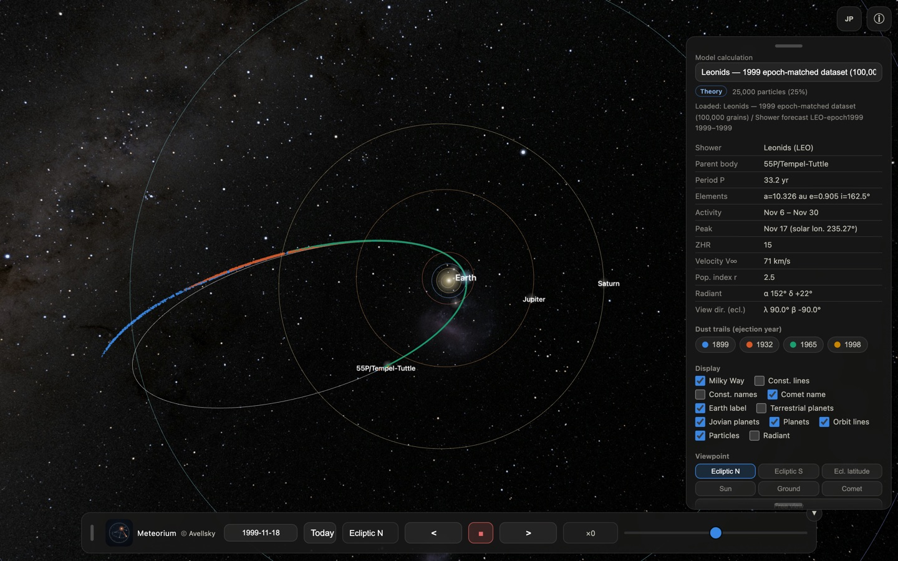
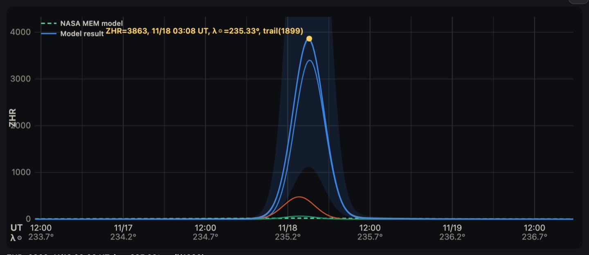
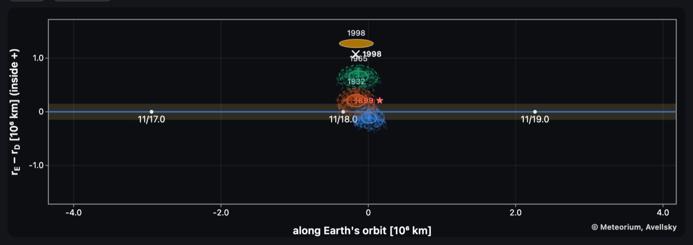
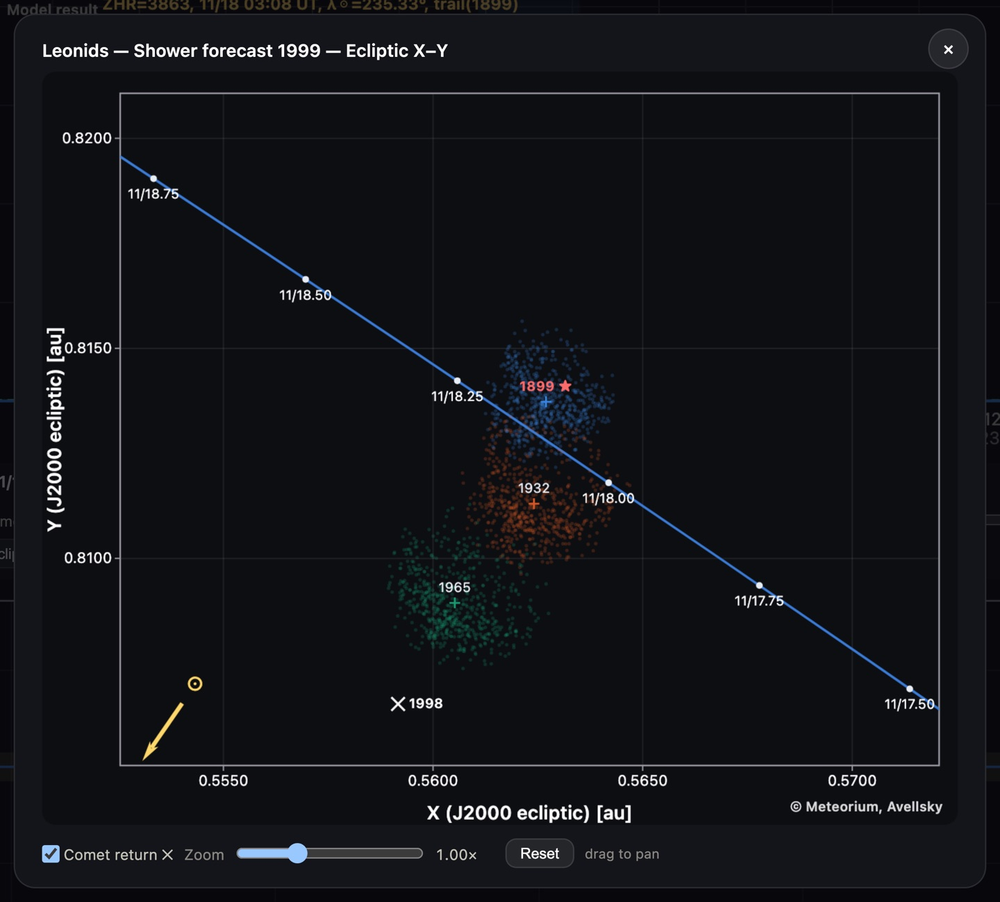

ペルセウス座流星群のダストトレイルを黄道面北から / The Perseid dust
trails seen from ecliptic north1999 年のしし座流星群を地上視点で（ZHR 100000）/ The 1999 Leonid storm
from the ground view (ZHR 100000)
Meteorium visualises the dust trails behind meteor showers in 3D, based on
real orbital dynamics. This app ships with 60,000 dust grains
from eight perihelion returns (1079–1992) of comet 109P/Swift-Tuttle, the
parent of the Perseids, integrated with REBOUND/ReboundX (planetary gravity + solar
radiation pressure) against NASA's Deep Star Maps 2020. All computation
runs on your device; no data
collection, no ads.
Basics
Fig. 1: Screen layout — 3D view, side panel, bottom time bar
Drag to rotate, pinch/wheel to zoom. Panels move by their grips.
The ▼ button on the bottom bar collapses it to a single
▲ button; in landscape the speed slider gets its own full-width row, and
rotating the device always brings the panels back on screen.
Trail legend chips toggle each ejection-year trail.
Ecliptic N/S — top/bottom view, each press rotates 45°.
Ecl. latitude — fixes the current longitude, steps latitude by 30°.
Sun — pinned to the Sun; presses cycle vernal equinox → comet
tracking → Earth tracking (caption top-left; tracking survives drags).
Earth — ground view toward the radiant with a live meteor shower
(ZHR 5,000) during the activity period (Jul 17 – Aug 24): meteors all over the
sky, perspective-true speeds and brightness, fireballs with persistent trains,
meteor clusters, stationary meteors, and planets at true colour/magnitude.
Comet — rides the comet; presses cycle front → rear → split screen
(rear|front) with captions.
Free view — an auto tour changing view and zoom every 10 s.
Fig. 2: Ground view — Perseids radiating from the radiant (2026-08-13)
Time
Date entry (BC as negative years), Today, ■ toggles stop ⇄ real time (×1),
arrows step ×2 → ×10 → … → ×10000, stepless slider.
What's new in 1.1
Version 1.1 opens the paper's own results inside the app. The figures below set the
model's forecast for the 1999 November 18 Leonid storm, loaded from the published
data, against what was actually observed that night.
Published data, loaded in the app
The Model calculation menu now offers Fetch published data…. It lists the
Leonid datasets published with the paper — the epoch-matched simulations for 1998,
1999, 2000, 2001, 2002 and 2009 — and pulls in whichever you pick. Choosing a
dataset also sets the forecast year for you.

The 1999 epoch-matched dataset, just loaded. Four dust trails left by 55P/Tempel-Tuttle in 1899, 1932, 1965 and 1998 reach inside Earth's orbit.
The Leonid forecasts for 2030-2035
The manuscript's 2030s forecasts ship with the app. Each year is computed, as in
the manuscript, from a dataset matched to that encounter's epoch.

The 1999 forecast set against what was observed. The model puts the maximum at 03:08 UT on November 18, from the 1899 trail, at ZHR 3863; the storm itself was recorded at 02:02 UT, ZHR 3700. The predicted time and size can be checked against what actually happened.
Two cross-section views
Two figures show where in the trail the Earth actually passes.

The dust-trail cross-section: distance along Earth's orbit across, radial miss distance up. Only the 1899 trail sits on Earth's path (the blue line).

The ecliptic-plane X-Y view, putting the dated ticks along Earth's orbit and the grain scatter of each trail on the same plane.
Also in 1.1
The viewpoint menu on the bottom bar now shows which viewpoint is in effect.
In the ground view the meteor rate can be set to ZHR 100 / 1000 / 5000 / 10000 / 100000, so a storm sky like 1999 can be reproduced.
Clearer dataset names (epoch and grain count written the same way throughout).
About the forecast model
Trail forecasts integrate the dust released at each perihelion return of the
parent comet forward to the present with REBOUND/ReboundX (planetary
perturbations, radiation pressure, Poynting–Robertson drag), then evaluate the
encounter at the trail's ecliptic node.
Parent position: dust ejection sites are anchored to the JPL Horizons
ephemeris, which uses an orbit solution fitted to each historical apparition.
A self-consistent back-integration of 55P instead drifts 0.08–0.15 au over
130 yr and more than 1 au before 1700, which biases every trail generated
from it.
Annual background: measured activity profiles from NASA MEO
(Moorhead et al. 2019)
Confidence class: each forecast carries a band — A (0.5–2.0×),
B (0.29–3.5×) or C (0.1–10×) — set per shower from how well the model
reproduces that shower's documented past encounters.
Shower parameters follow the IMO Meteor Shower Calendar.
Source of the forecast model
The Leonid forecast model, and the 2030–2035 values shipped with the app,
come from the following manuscript, currently submitted to Icarus:
Shinsuke Abe (2026) “A calibrated dust-trail model of the Leonid
meteoroid stream and forecasts of the 2031–2035 encounters”,
submitted to Icarus.
Each year is computed, as in the manuscript, from a dataset matched to the epoch
of that encounter. Reading every year off a single snapshot instead leaves out the
planetary motion of the trail nodes since then, which reverses which trail dominates
the 2034 encounter. The datasets behind the computation are published at Zenodo (DOI:
10.5281/zenodo.22004211).
The app does not collect, transmit, or store any data. It works fully
on your device, going online only when you fetch the published datasets,
with no ads, tracking, analytics, or accounts. Preferences are stored
only on your device.